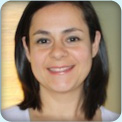
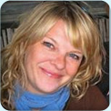
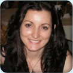
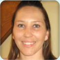
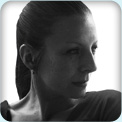

Our team

Sofie Roque RMT/Owner
Sofia Roque was born in Angola, Africa but raised in Canada, which has been her home since the age of 2. She speaks English and Portuguese fluently. Sofie graduated from Kikkawa College for Massage Therapy and has been a Registered Massage Therapist since 1994. In 1999 Sofie and her sister Martha opened Seraphic Massage Therapy Clinic. Sofie is skilled in Pregnancy Massage, Deep Tissue Massage, Trigger Point Treatments, Reflexology and Infant Massage.
Martha Roque RMT/Owner
Martha Roque graduated from Kikkawa College and became a Registered Massage Therapist in 1999. She immediately opened Seraphic Massage Therapy with her sister and partner Sofia Roque.
Martha has since studied Reiki and incorporates this relaxing energy work into her treatments. Martha is experienced in Pre-Natal massage and has much success with inducing labour for overdue pregnancies. She is also adept at treating headaches, TMJ and shoulder tension. Martha Speaks fluent Portuguese, and understands Italian and Spanish.
Karen Dawson RMT
Karen is a Registered Massage Therapist with the College of Massage Therapists of Ontario (CMTO) and a graduate of Sutherland-Chan School and Teaching Clinic in Toronto.
Karen endeavors to relieve pain and discomfort and decrease stress and tension through taking the time to assess the needs, objectives and specific concerns of her clients. She integrates traditional Swedish massage with trigger point therapy, deep tissue massage, joint mobilizations and myofascial release to treat the origin of her clients' problems, not just their symptoms.
Karen has experience working with clients presenting with sports injuries, pregnancy related discomforts, breast cancer, fibromyalgia, post-surgical scar tissue, overuse injuries and a variety of other musculoskeletal disorders.
Alycia Duff RMT
Alycia Duff is a Registered Massage Therapist and active member of the Ontario Massage Therapist Association. She is a graduate of Sutherland-Chan School & Teaching Clinic in Toronto. Alycia is experienced in Sports massage and Myofascial Release techniques for injury rehabilitation and prevention.
She is a regular participant in the MS walk to raise funds for Multiple Sclerosis research. She treats both children and adults with repetitive strain injuries, compression syndromes, soft tissue trauma and chronic pain.
Kristie Lille RMT
Kristie is a Registered Massage Therapist and graduate of Sutherland-Chan School & Teaching Clinic. She is a member of both the College of Massage Therapists of Ontario and the RMTAO. Kristie's treatment experience includes pregnancy massage, Multiple Sclerosis patients, seniors, children, and equine massage.
Kristie loves a challenge and enjoys treating a wide variety of conditions in order to further her knowledge and perfect her craft. Her ultimate goal with each and every client is to increase body awareness and healing. A massage with Kristie includes clear communication, respect, sensitive hands and most importantly, results!

Angie J. Johnston, RMT
Angie is a Registered Massage Therapist and a graduate of the Kikkawa College Massage Therapy Program. Her focus lies in Swedish Massage Therapy, in addition to Pre and Post Natal Pregnancy Massage, Myofascial Release Techniques and Hot Stone Massage. She also has an interest in Aromatherapy and Reflexology.
Angie likes to offer a deeply relaxing environment to shed the days stress away, as well as help her clients to work towards maintaining or improving any muscle imbalance issues they may be experiencing, facilitating the healing process in body and mind. She is currently taking new clients.

Annette Broderick-Colombo RMT
Annette graduated from Sutherland-Chan in May of 2010 and is registered with the College of Massage Therapists of Ontario. She is also a member of the Registered Massage Therapists Association of Ontario.
Annette's focus in school included spinal cord injury, chronic pain and rehabilitation. She believes that the techniques used in massage therapy can not only aid in the physical health, but the emotional as well.

Caterina (Rina) Modafferi RMT
Caterina graduated from ICT Kikkawa College in June 2009. She was registered with the College of Massage Therapists of Ontario in August 2009 and since then has been enjoying her career as a Registered Massage Therapist. Caterina's successful treatments derive from her acquired knowledge, effective techniques and caring approach towards her clients overall health.

Heather Finlayson, RMT
Heather Finlayson began studying TCM in 2003 while studying Jin Shin Do Acupressure at the Canadian Acupressure Institute, Victoria B.C. While out West she also studied Reiki, Reflexology, and Rain Drop Therapy. Coming to Toronto, Heather enrolled at the Shiatsu School of Canada; where she has completed both Shiatsu and Acupuncture programs. Heather interned for 1 year with a Japanese Acupuncturist here in Toronto, and then completed his course at the Shiatsu School of Canada. She since has completed the Massage Therapy program at Kikkawa College with Thai massage and Sports massage as her elective studies.
Heather is very compassionate in her work and often combines modalities to give a uniquely tailored treatment for each individuals needs. Heather also offers cosmetic acupuncture and acupressure facials that relax and rejuvenate, balance complexion, reduce puffiness and dark circles under the eye, acne, wrinkles, and scars.
Christina De Sousa Yoga Instructor
Christina completed her Teacher Training at Yoga Space in Toronto with Kathryn Beet and Patricia White. Having taken up the practice in search of a way to cope with the everyday challenges of life, she always left Yoga classes wanting to come back for more.
The sense of calm, peace, and physical well-being left her inspired to pursue her teacher training. She is lively, has a bright smile, and feels honored to be able to share the experience of yoga.